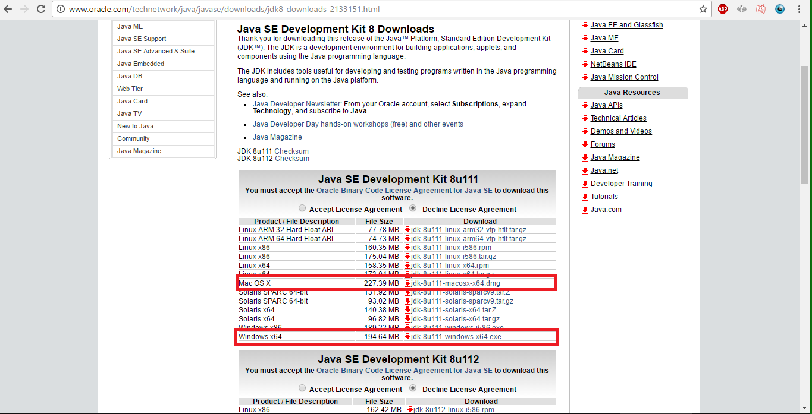
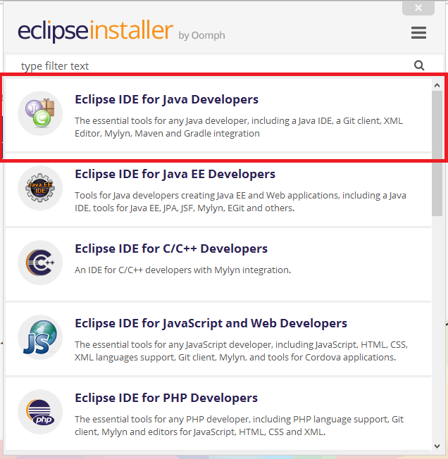
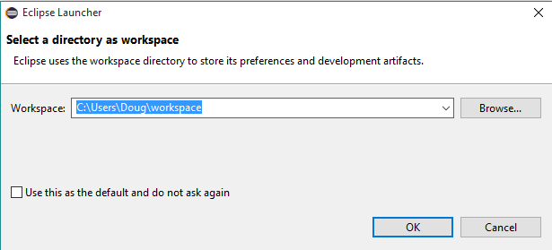
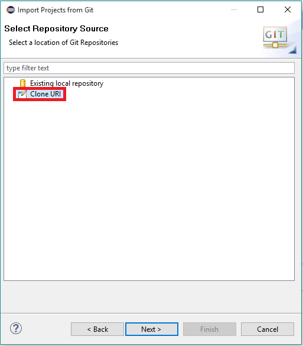
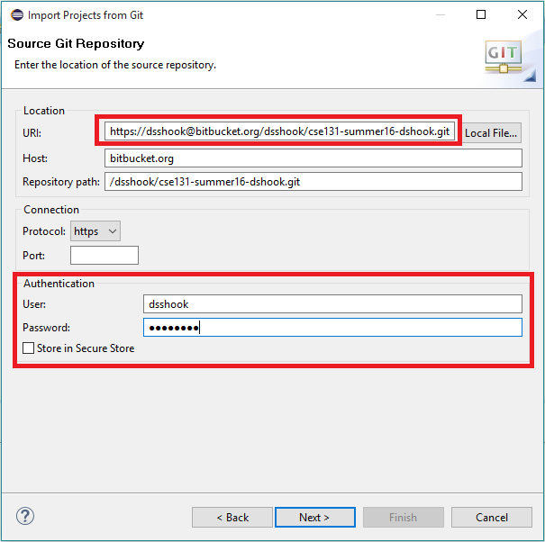
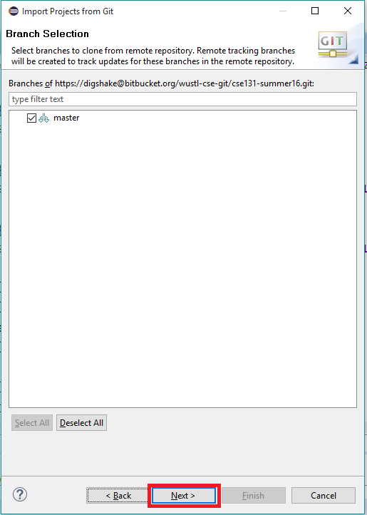
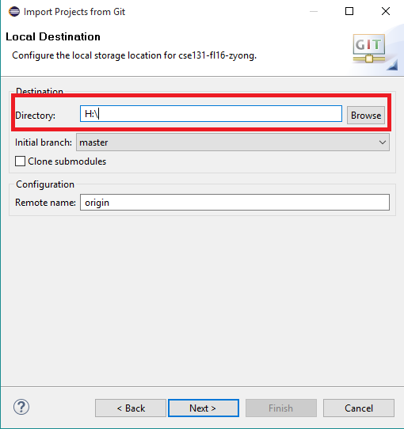
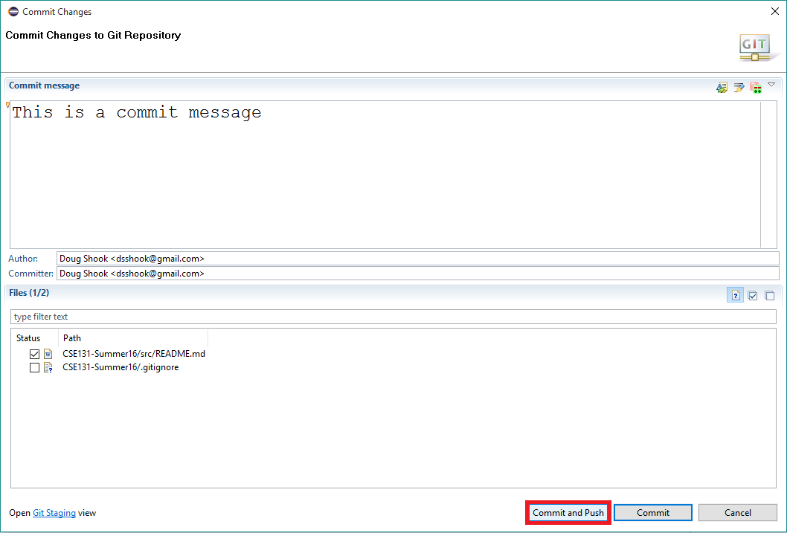
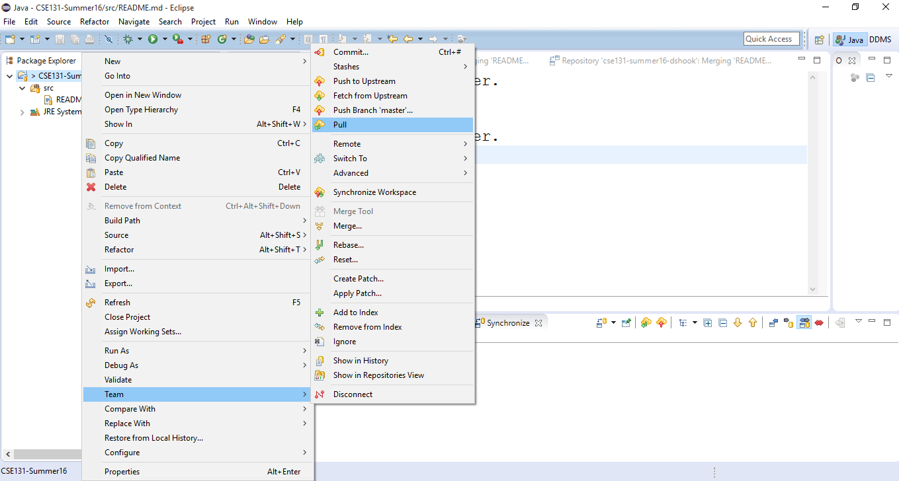

Prep 0: Module 0
#Introductory Videos
The following videos introduce you to the field of computer science and also explain what to expect from this course.
| Video | Description |
|---|---|
| Course Introduction | Dr. Cytron gives you a brief introduction to CSE131 |
| Module Introduction | This video will introduce you to the topics that are covered in the first module |
| A Generation of Computation | Dr. Cytron explains how computing has changed over the years |
| Thirty Years of Progress | Dr. Cytron explores some of the changes in computing over the last three decades |
| What is Computer Science? | Most people know what a computer is, but what exactly is computer science? |
| How to succeed in this course | What are some strategies that you can take to have success in CSE131? |
#Review Course Policies
We meet twice a week. Tuesdays will be the due dates for homework assignments. You will need to come to your assigned lab section to demo your assignment to the instructor or a TA to recieve credit. Tuesdays will also be the days that quizzes are assigned. Quizzes are taken online, and you have up to a week to complete them.
Thursdays are for completing that week's studio. A studio is a short problem set that we expect you to complete in class. We do not "grade" them per se, you simply have to show up and try your best. Even if you do not complete a studio before the end of class, you will still get credit for it.
You will be expected to keep up with the prep work for each module. You should do the prep work before showing up to class on Thursdays, so that you are ready to participate in the studio.
You are also required to complete 100 points of extensions over the course of the semester. There are extensions presented for each module that relate to the topic presented in that module.
When you have completed a studio or an assignment, you must demo it to a TA or the instructor to recieve credit. The person who you demo your work to will ask you questions about your work, so be prepared!
We are using Schoology to track grades. Once your labs, studios, and quizzes have been graded, you will be able to find your grades on Schoology.
If you get stuck in class, be sure to ask a TA or the instructor. If you get stuck on something outside of class, we have set up a message board on Piazza that you can use to ask questions.
#Install the required programs
##Install Java
You will first want to make sure to install the most recent version of Java. To do this, go Here and choose the appropriate version of Java for either Mac or Windows as shown in the picture below:

Once you have downloaded Java, you should run the installer and follow the instructions.
##Installing Eclipse
To install Eclipse, first go here and download it.
Once you have downloaded Eclipse, you should run the installer. Be sure to select "Eclipse IDE for Java Developers" during the installation:

Once Eclipse is installed, go ahead and start it. You should first see a screen asking you to select a workspace that looks similar to this:

If you are using your own computer, you can select the default workspace location by clicking OK. If you are on a lab computer, you should select the H: drive.
##Access your repository
The first thing you will need to do is set up a BitBucket account. You should have received an email about this. If you have not, please contact the instructor as soon as possible.
This video will walk you through the steps of getting your repository set up in Eclipse. If you’d prefer to read written instructions you can find them below the video.
Once you have finished setting up your account on BitBucket, you need to create a clone of your repository on your local machine. First, go to the BitBucket page for your repository (your repository should contain "CSE131" and your WUSTL key in the name) and copy the link:

Next, open Eclipse and go into your workspace:

Go to File -> Import. Then select Git project from the list:

Next, select “Clone URI”:

Paste the link that you copied from BitBucket into the box at the top. Fill in your BitBucket login (not your WUSTL key!) at the bottom:

On this screen, click next:

Eventually you will see the following screen. If you are on your laptop, then you do not need to do anything on this screen. If you are on a lab computer, make sure to choose a location that is on the H:\ drive. You can do this by typing in a location, or by clicking the "Browse" button and selecting the H:\ drive.

Keep clicking next until you see the following screen. Make sure the box next to the CSE131 project is checked:

Once you click "Finish", you should see the CSE131 project in your workspace. It should contain all of the materials for labs, studios, and extensions.
#Committing your work
Committing your work is equivalent to turning something in. When you are ready to submit your work, right click the project and select Team-> Commit:

Type in a descriptive commit message then push the "Commit and Push" button at the bottom. Make sure to push! If you only commit (without the push) we will not be able to grade your work.

You may commit/push as many times as you want. You should commit often! Think of it as saving your work.
#Updating your repository
From time to time we will add files to your repository (such as grades). To do this, you need to update your repository. This can be accomplished by right clicking the CSE131 project and selecting "Pull":

This will get any changes that have been made to your repository. It is a good habit to run a synchronize before you make any changes to your repository, especially if you are working with a partner.